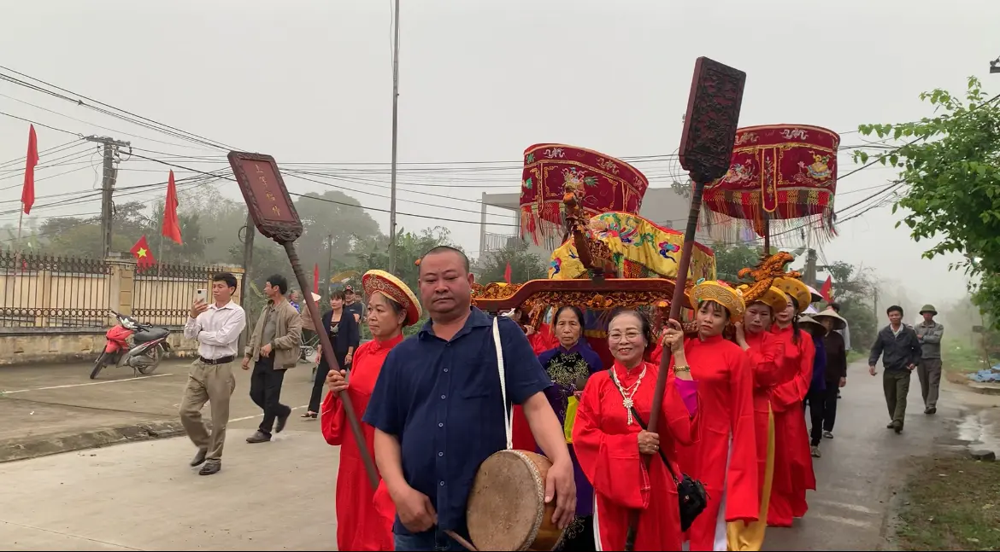
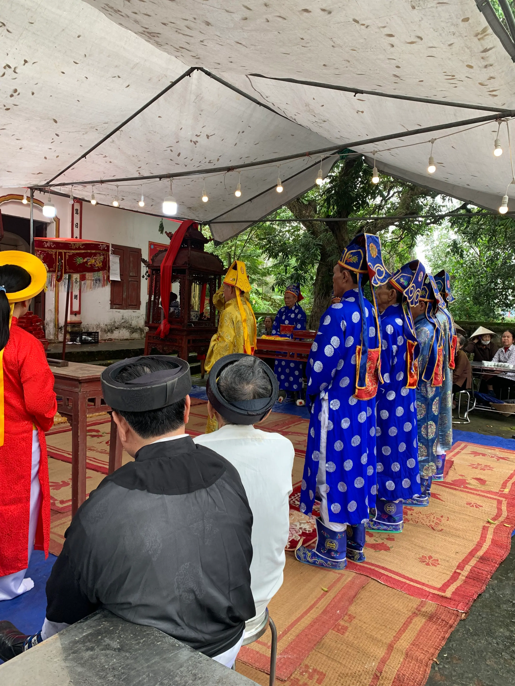
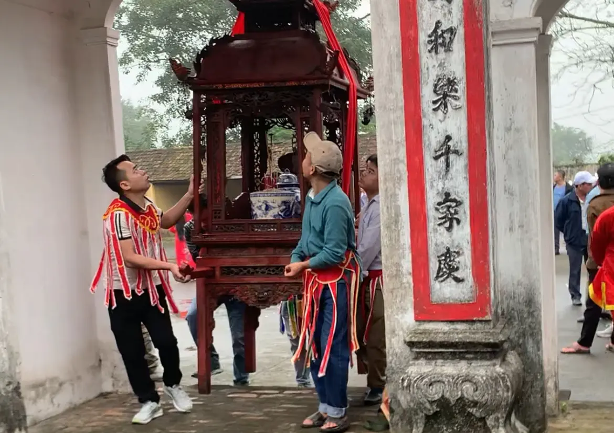
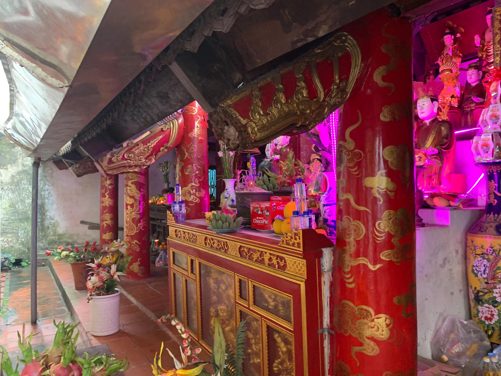
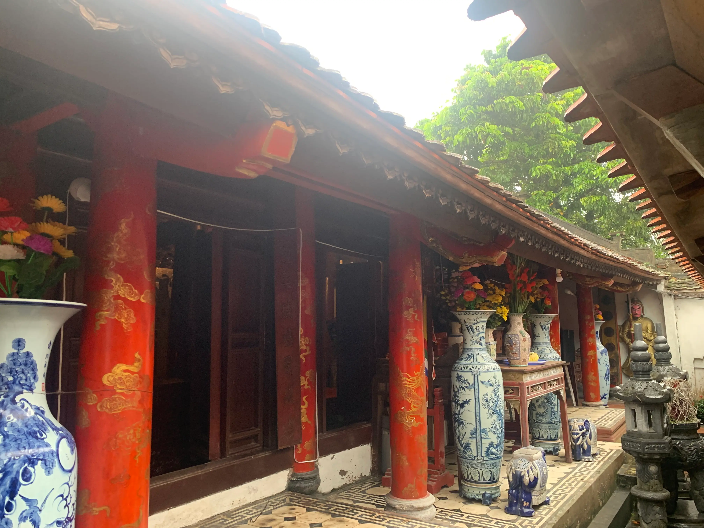

There are journeys where the road itself slowly begins to explain the country.
Our arrival in Nam Định was shaped long before we ever crossed into the province. Back in 2023, while wandering through Phú Nhuận in Ho Chi Minh City, Hải Ninh and I unexpectedly found ourselves at Hùng Vương Vân Đồn Temple — a spiritual site established decades ago by migrants from Nam Trực, Nam Định.
Both of us carry the Hoàng surname, and through a series of small conversations with the temple keeper, chú Tuất, we were introduced to the intertwined histories of the Hoàng, Lại, and Đỗ families who had once left northern Vietnam and rebuilt fragments of their village life in the South. Some families donated land to establish a vọng temple — a place to continue worshipping the Mother Goddess and the sacred spirits of Đông Temple and Tây Temple from afar.
What struck us most was that the local belief system here existed somewhat outside the formal structure of the Four Palaces Mother Goddess tradition commonly associated with northern Vietnam. It belonged specifically to this village, this lineage, this migration story.
During our Journey Across the Thousand Miles, we could not pass through the North without visiting the place where these traditions first began.
"We arrived in Vân Đồn village on the 10th day of the second lunar month — the annual festival day of Tây Temple. The procession entered the village roads just as we arrived."
Hoàng Đại — Thiện KiếnThe Procession
Women in áo dài stood along the roadside holding five-coloured ceremonial flags. At the front came the drum keeper and the lion dancers. Behind them were the men carrying the first palanquin, bearing a large incense urn. Another ceremonial team followed carrying the National Heritage certificate — a modern echo of what would once have been royal decrees carried through the village during imperial times.
Then came the offering trays, musicians with đàn nhị, horns and drums, women carrying ritual staffs and parasols, and finally the women's palanquin team carrying the kiệu võng through the village roads.
The procession departed from the Mother Temple, split into two directions toward Đông Temple and Tây Temple, before joining together again along the village's main road and eventually returning to where it had begun.
Unlike many processions elsewhere, where men carry all ceremonial palanquins, the women here were entrusted with the võng kiệu.

"The entire village seemed to move as one continuous body."
Structure Without Announcement
Once the procession returned to the Mother Temple courtyard, the movement gradually separated into smaller ritual roles. The men carrying the incense palanquin and ceremonial documents entered the main hall. The ritual team prepared for the offering rites. Elder men sat to the left, women to the right.
Everything appeared to unfold according to a structure long understood before anyone arrived.
According to local accounts, the Mother Goddess had once been the daughter of an official from the Liang dynasty who followed her father southward to oversee the region. When the emperor summoned the family back to the capital, her father died along the journey. After the death of her mother soon after, she remained behind, donated land to establish a temple, and helped villagers cultivate the surrounding fields before eventually departing in search of her father's burial place. She later died on the road and was believed to have become a sacred spirit.
Villagers also believe she once appeared to aid Trần dynasty forces during campaigns against Champa. Through the Lê and Nguyễn dynasties, her worship continued to receive recognition, eventually culminating in an imperial decree under Emperor Khải Định conferring upon her the title of Princess.
Because she had entered religious life early, offerings presented at the Mother Temple remain entirely vegetarian. Yet at the sacred spirits of Đông Temple and Tây Temple, the offerings are different — sticky rice and pork shared communally after the ceremonies conclude.

Communal Labour
Each year, different village families take turns raising ceremonial pigs for the festival season. Heavy labour falls largely to the men, while the women prepare vegetables and cooking inside communal kitchens. Younger men carry the palanquins through the village roads. By late afternoon, the women return once again as dancers and performers within the ceremony itself.
"The festival was not merely preserving belief.
It was preserving participation."

The Meal
After the incense offerings and ceremonial rites concluded, the village gradually settled into another part of the gathering — conversation. People moved between tables asking about families, harvests, old neighbours, and returning relatives. And somehow, amidst all of that, Hải Ninh and I were welcomed into the middle of it as well.
The meal itself was remarkably simple: boiled pork, sticky rice, salt and pepper, and cups of rice liquor shared across the tables. From the communal kitchen, each table received its own tray of pork and glutinous rice. Nothing was elaborate. Yet everything felt deeply complete within that setting.
The pork carried the unmistakable flavour of home-raised livestock — clean, rich, and surprisingly light despite the layers of fat. Nothing about the preparation was complicated. The meat had simply been boiled, yet done with the quiet precision of people who had repeated the same task for generations.
The sticky rice remained soft throughout the long afternoon ceremonies, neither dry nor overly dense. Together with salt, pepper, conversation, handshakes, and cups of rice wine passed from one person to another, the meal became far more than food itself.

"Simple is the best, always."
Many of the next places we would eventually visit during the journey were first suggested to us over those tables.
Traces That Endure
In Vân Đồn village, we also began noticing small traces of a past that had not entirely disappeared. French military doctor Charles-Édouard Hocquard once described seeing chalk-drawn bows and arrows outside homes during Tết in Huế in 1886 — symbols believed to ward away evil spirits. More than a century later, we found similar markings still drawn in white lime outside village homes in Nam Định.
Seasonal fruits remained piled beside the roads. Rice fields stretched green across the landscape. Certain rhythms had endured quietly here.

Local friends eventually led us toward a bowl of Nam Định phở at a small shop called Phở Gốc Tre — the kind of meal that quietly stays with you long after the journey ends. The broth was remarkably clear yet deeply layered in flavour. Northern-style chili sauces, crispy quẩy, fresh herbs, and slices of beef all seemed to hold together through an ingredient quality difficult to replicate elsewhere.
"Technique can be replicated.
But flavour still belongs to the land, the ingredients, and the people who shape them."
Not far away, near Đò Quan Bridge, we stopped for hot pâté bánh mì served straight from the pot while still steaming. Seeing, smelling, touching, and tasting the pâté all at once created a kind of immediacy that words struggle to explain.
Before leaving Nam Định, we stopped once more at Trần Temple to offer incense — in gratitude not only for the military legacy of the Trần dynasty, but also for the spiritual discipline and sense of conduct that continued shaping Vietnamese life long after the dynasty itself had passed.
From there, the road led onward toward Thăng Long.